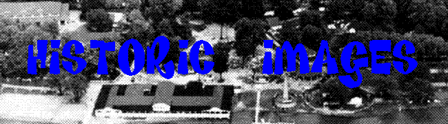

There are ghost stories told about Chippewa Lake, often about a fatal roller coaster accident which never actually took place, but I'm inclined to leave it off the "haunted" lists for the time being. There's a spooky, Scooby Doo kind of ambience to any abandoned amusement park, and the skeletal look of the wooden roller coaster frame probably has something to do with it, but the memories people have of this place aren't like those associated with a mental hospital or a prison or even a school; these are happy memories, and it's still a fun place to visit, albeit for different reasons--and nowadays you might want to leave the little kids at home, unless they like to play with rusty metal and broken glass. As amazing as this place is, the most amazing part is that I operated Forgotten Ohio for almost seven years before I put up a section profiling it. It's hard to talk about "abandoned Ohio" locales without mentioning Chippewa Lake Park in the same breath. Years ago a producer from the MTV show Fear (remember that one?) contacted me about an episode they wanted to film in Ohio and asked for recommendations. When I responded with a list of actually-supposed-to-be-haunted sites, the producer wrote back and said that they were actually interested in shooting it in an abandoned amusement park, and weren't there a couple of those in Ohio?
Do you need to find cheap printer ink options? Need to find discount prices on printer ink and printer cartridges? Looking for cheap prices when it comes to toner and laser toner and ink! Get your low priced printer ink solutions! Get a cheap ink cartridge or find a selection of discount printer ink? Than look no further than the online store of Click Inks!
Dybdahl, Peter. "Alone with Barbed Wire, Roller Coasters." The Oberlin Review: November 9, 2001.
Francis, David W. and Diane DeMali Francis. Images of America: Chippewa Lake Park. Chicago: Arcadia Publishing, 2004.
Kraynek, Sharon L.D. Chippewa Lake Chronicles. Self-Published, 1993.
Kraynek, Sharon L.D. Chippewa Lake Park 1800-1978: Diary of an Amusement Park. Self-Published, 1987.
Kraynek, Sharon L.D. and Eli R. Beachy. Chippewa Lake Park: The Rush to the Glory Years, 1900-1929. Self-Published, 2005.
Krayneck, Sharon L.D. Chippewa Lake Revisited. Self-Published, 1995.